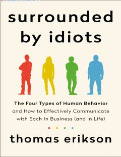

ATAtrofingizdagi odamlar bilan til topishish va ularning xatti-harakatlarini tushunish bo'yicha amaliy qo'llanma.
Ushbu kitob insonlar o'rtasidagi muloqotni yaxshilash va atrofimizdagi odamlarning xatti-harakatlarini tushunishga yordam beradi. Muallif DISC usuliga asoslangan holda, turli xil shaxsiyat turlarini tahlil qilib, ular bilan samarali til topishish yo'llarini o'rgatadi.